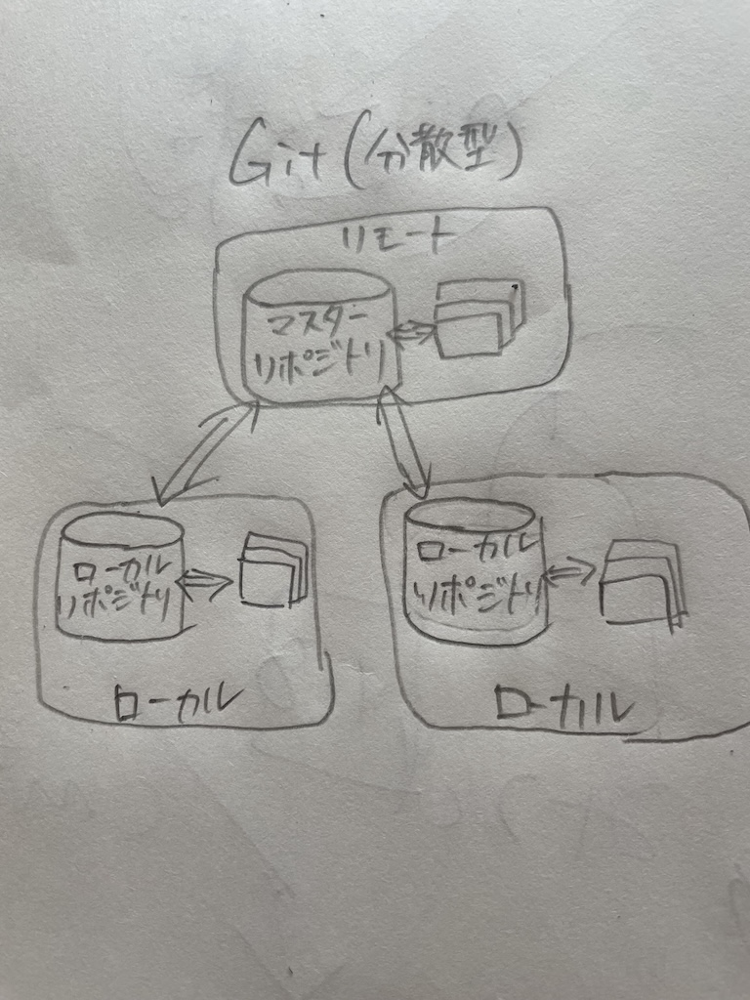
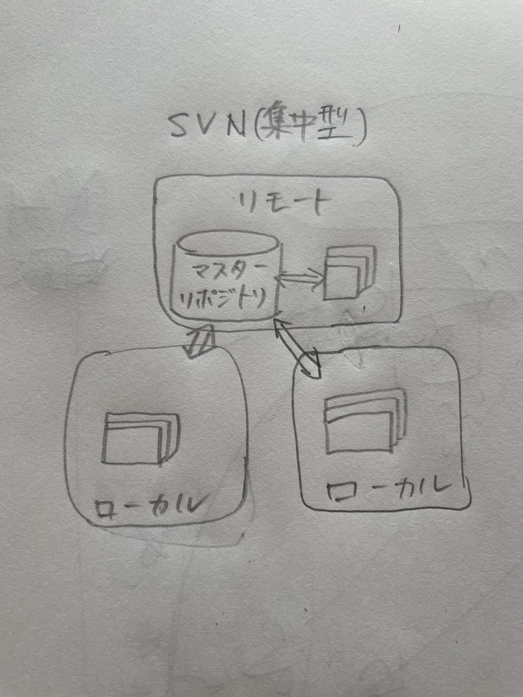

第1回課題
gitとは？
Gitは、分散型バージョン管理システムの一つであり、ソフトウェア開発やプロジェクト管理において、ファイルやコードの変更履歴を管理するためのツールです。
分散型、集中型とは？
 
htmlとは？
HTMLとは「ハイパーテキスト・マークアップ・ランゲージ（Hyper Text Markup Language）」の略。
Webページを制作するためのマークアップ言語です。
またマークアップ言語とは、Webページ内のテキスト情報の構成（タイトル・段落など）や役割をコンピュータが構造的に理解できるようにするための言語を意味します。
Webデザインの観点からも、HTMLは重要です。
基本的にWebページの見た目は、HTMLとCSS（色や文字サイズなどの装飾を設定する言語）によって作られています。
そのためHTMLによって正しくマークアップされた情報は視認性が高く、利用者にとってコンテンツ内容も理解しやすくなります。
覚えておきたい基本のタグ
hタグ
hタグとは「headingタグ」の略。
見出しを作成する際に用いるタグです。
h1からh6まである。
aタグ
aタグとは「anchorタグ」の略。
ページ内にリンクを埋め込む際に用いるタグです。
aタグを用いる場合は性質を付与する「href属性」を記述した上で、属性値にはリンクさせるWebページのURLやファイルの格納場所・名前を記述します。
ulタグ、olタグ
数字のないリストを作成する際に用いる「ul（unodered list）タグ」や数字のあるリストを作成する際に用いる「ol（ordered list）タグ。
その中の部分は、liタグを使ってリストを作ることができる。
箇条書きしたいときはこのタグを使い表すことができる。
imgタグ
imgタグとはWebページに画像を表示させる際によく用いるタグです。
src属性とalt属性をセットで記述します。
参考文献